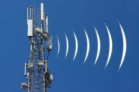
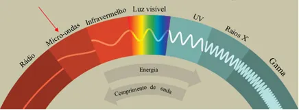
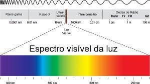

Infravermelhos
Este trabalho foi feito por : Martim Pereira, Gonçalo Fonseca, Matias Martins e Renato Santos 1ºPRG
Os raios infravermelhos foram descobertos no espetro solar, em 1880, pelo astrónomo de origem alemã, Frederick William Herschel.
Espetro solar: Conjunto de todas as frequências das ondas magnéticas irradiadas pelo Sol.
Constituídos por uma radiação composta por fotões, em que a frequência é maior que 8x1011 Hz e menor que 3x1014 Hz, isto é, a radiação eletromagnética com frequência inferior à da luz vermelha, mas superior à das ondas de rádio.
Os raios infravermelhos (IV) são radiações eletromagnéticas com comprimentos de onda entre 700 e 50 000 nm. (unidade de medida)
Fotões: Medição da força magnética e a menor partícula de qualquer radiação eletromagnética, como a luz visível.
A experiência deste astrónomo consistiu em fazer atravessar um feixe de luz branca por um prisma, e observar num alvo um espetro contínuo de radiações, do comprimento de onda entre o vermelho e o violeta. De seguida, colocou um termómetro no alvo, a seguir ao vermelho, e ocorreu uma subida de temperatura. A radiação infravermelha corresponde essa região.
Feixe de luz: Conjunto de raios de luz podem ser: paralelos, convergentes ou divergentes.
Referindo agora os átomos, eles ao encontraram-se com moléculas ou com corpos sólidos invertem cargas elétricas. Quanto mais alta for a temperatura, mais violentas serão as vibrações. As frequências destes movimentos vibratórios dos átomos e das moléculas situam-se na região dos infravermelhos do espetro eletromagnético. O espetro de uma molécula é muito peculiar, podendo ser utilizado para a identificação das moléculas.
Os raios infravermelhos executam um papel muito essencial na Natureza, sendo responsáveis pela troca de energia térmica através do vazio. Se as radiações não existissem, os dois corpos que se deparassem a uma determinada temperatura, manter-se-iam sem quaisquer alterações. No entanto, sendo que o corpo mais quente dá energia ao corpo mais frio, através da radiação, acabam por atingir uma temperatura de equilíbrio.
Estes raios também são utilizados nos painéis solares, em termografia (técnica de diagnóstico para tratamento de doenças circulatórias), nos comandos da televisão e outras aparelhagens. São ainda usados na cartografia, ou seja, fotografias infravermelhas captadas por satélites. Ao fotografar uma casa, é possível detetar os sinais que emitem maior quantidade de radiação térmica.
Tipos de Radiação
-

Ondas de rádio
-

Micro-ondas
-

Visível
-
 Raios X
Raios X
-
 Raios gama
Raios gama
Webgrafia
-
https://www.infopedia.pt/apoio/artigos/$infravermelho